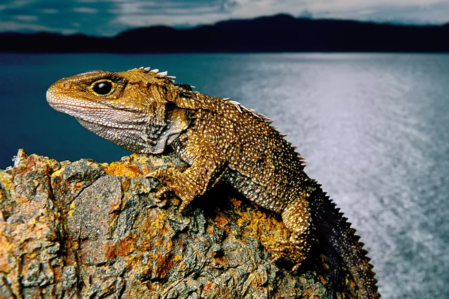

Crocodilians
Crocodilians are a group of large reptiles that includes alligators, crocodiles, gharials, and caimans. Crocodilians are formidable predators with powerful jaws, a muscular tail, large protective scales, streamlined body, and eyes and nostrils that are positioned on top of their head. Crocodilians first appeared about 84 million years ago during the Late Cretaceous and are the closest living relatives of the birds. Crocodilians have changed little in the past 200 million years. There are about 23 species of crocodilians alive today.
Squamates
Squamates are the most diverse of all the reptile groups, with approximately 7,400 living species. Squamates include lizards, snakes, and worm-lizards. Squamates first appeared in the fossil record during the mid-Jurassic and probably existed before that time. The fossil record for squamates is rather sparse. Modern squamates arose about 160 million years ago, during the late Jurassic Period. The earliest lizard fossils are between 185 and 165 million years old.
Tuatara

Tuatara is a group of reptiles that are lizard-like in appearance but they differ from the squamates in that their skull is not jointed. Tuatara was once widespread but today only two species of tuatara remain. Their range is now restricted to just a few islands in New Zealand. The first tuatara appeared during the Mesozoic Era, about 220 million years ago, about the same time the first dinosaurs appeared. The closest living relatives of the tuatara are the squamates.​
Turtles
Turtles are among the most ancient of the reptiles alive today and have changed little since they first appeared some 200 million years ago. They have a protective shell that encloses their body and provides protection and camouflage. Turtles inhabit terrestrial, freshwater, and marine habitats and are found both in tropical and temperate regions. The first turtles appeared more than 220 million years ago during the Late Triassic Period. Since that time, turtles have changed little and it is quite possible that modern turtles closely resemble those that roamed the Earth during the time of the dinosaurs.